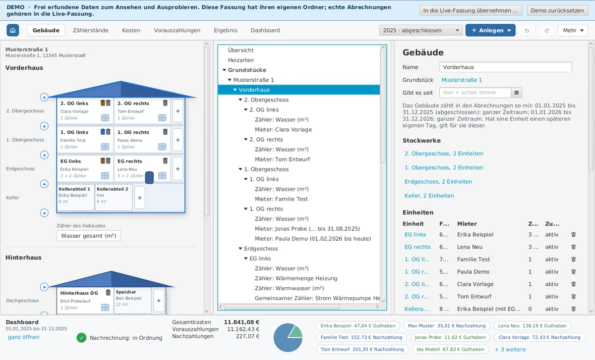
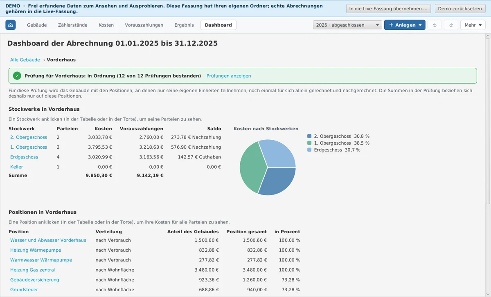
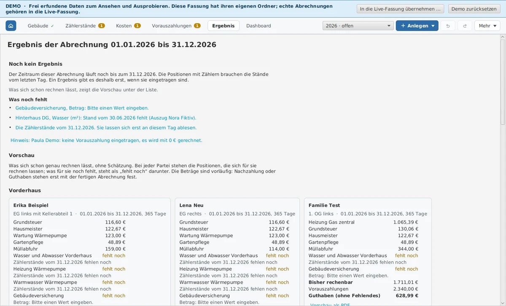
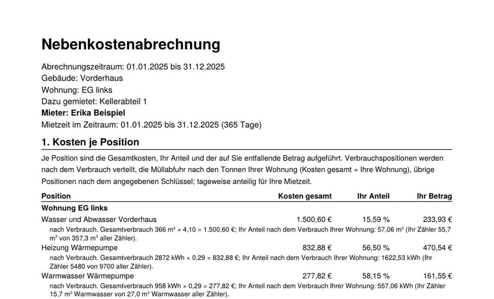

Die Nebenkostenabrechnung, die einfach aufgeht
Kostenlos für alle Vermieter in Deutschland, von der Einliegerwohnung bis zu mehreren Häusern. Einzug im März, Auszug im Oktober, ein Kellerabteil dazu gemietet: Das Programm rechnet jeden Tag und jeden Zähler einheitlich ab, legt jeden Rechenschritt offen und rechnet alles ein zweites Mal nach. Für Windows, Mac und Linux. Deine Daten bleiben auf deinem Rechner.
Komplett kostenlos, privat und gewerblich. Keine Anmeldung, kein Abo, keine Werbung, keine Cloud. Zum Ausprobieren gibt es eine Demo mit erfundenen Gebäuden und Mietern.
Strom der Wärmepumpe für die Heizung, ein Jahr
Gesamtzähler: 4.000 kWh
| Einheit | Anteil | Kosten |
|---|---|---|
| EG linksWärmemenge 6.000 von 10.000 | 2.400 kWh | 720,00 € |
| EG rechtsWärmemenge 4.000 von 10.000 | 1.600 kWh | 480,00 € |
| Zusammen | 4.000 kWh | 1.200,00 € |
Nachrechnung stimmt auf den Cent
Was du davon hast
Kein Abend mehr mit Taschenrechner und Zählerzetteln
Du trägst Zählerstände, Rechnungen und Vorauszahlungen ein, das Programm verteilt. Am Ende hat jeder Mieter seine fertige Abrechnung als PDF, zum Ausdrucken oder Verschicken.
Einzug, Auszug, Leerstand: alles einheitlich
Egal ob jemand mitten im Jahr einzieht, auszieht oder eine Einheit eine Weile leer steht: Gerechnet wird auf den Tag genau, nach denselben Regeln für alle. Wer auszieht, bekommt seine Abrechnung als vorläufige Fassung, sobald für ihn alles feststeht, ohne aufs Jahresende zu warten.
Auch Keller, Speicher und Laden
Nebenräume wie ein Kellerabteil rechnet das Programm bei Bedarf mit ab, auch wenn sie zu einer Wohnung dazu gemietet sind. Auch ein Laden oder Büro im Haus lässt sich abrechnen; die Abrechnung spricht dann neutral vom Mietobjekt.
Weniger Diskussionen mit Mietern
Unter jeder Position steht, wie der Betrag zustande kommt. Wer nachrechnen will, kann es, und kommt auf dieselbe Zahl. Tippfehler fallen auf, bevor die Abrechnung das Haus verlässt.
Wirklich kostenlos
Kein Abo, keine Testphase, keine Werbung, keine bezahlte Vollversion. Nutzen darfst du es, so lange du willst, auf beliebig vielen eigenen Geräten. Wer mag, gibt freiwillig einen Kaffee aus.
Keine Cloud, trotzdem gesichert
Nichts liegt auf fremden Servern. Damit trotzdem nichts verloren geht, sichert das Programm auf Wunsch an einen zweiten Ort, etwa eine externe Festplatte, und hebt die letzten 30 Stände auf.
Was das Programm abrechnet
Von einer Wohnung bis zu mehreren Häusern auf mehreren Grundstücken. Am Ende steht für jeden Mieter eine Abrechnung als PDF, in der jede Position mit ihrem Rechenweg steht. Im Einzelnen:
- Gebäude und Einheiten
- Beliebig viele Gebäude mit benannten Stockwerken, Wohnungen und Nebenräumen wie Kellerabteil oder Speicher. Das Programm zeichnet jedes Gebäude als Querschnitt; Einheiten und Stockwerke lassen sich darin verschieben. Der Assistent „Geführt einrichten“ fragt ein Gebäude in acht Schritten ab.
- Zähler und Zählerstände
- Gesamtzähler und Zähler je Einheit, auch ein gemeinsamer Zähler zweier Einheiten. Zähler, die nur Anteile bestimmen, etwa die Wärmemenge an einer Wärmepumpe, zählen ohne Maßeinheit. Für jeden Ablesetag zeigt das Programm, welche Stände noch fehlen; ein getauschter Zähler wird mit Endstand und neuem Anfangsstand erfasst.
- Mieterwechsel und Leerstand
- Tagesgenau. Zieht jemand aus, teilen die Stände vom Auszugstag den Verbrauch; Tage ohne Mieter trägt der Vermieter als eigene Zeile. Steht für den ausgezogenen Mieter alles fest, gibt es seine Abrechnung gleich als vorläufiges PDF, ohne aufs Jahresende zu warten.
- Kosten
- Nach Verbrauch, nach Fläche, zu gleichen Teilen oder als Bruch wie 1/12. Eine Position kann nur ein Gebäude betreffen, mehrere Gebäude oder nur einen Teil des Jahres. Preise gelten ab einem Datum; ändert sich ein Preis im Jahr, wird tagesgenau geteilt. Jede Position zeigt, wie sich ihr Betrag auf Einheiten, Mieter und Leerstand verteilt, und in welcher Reihenfolge die Positionen in der Abrechnung stehen, legst du selbst fest.
- Müll
- Tonnen je Einheit mit Fraktion und Größe, dazu der Tarif der Gemeinde je Halbjahr. Wer unterjährig einzieht, zahlt nur seine Tage.
- Vorauszahlungen und Ergebnis
- Monatliche Vorauszahlungen, auf die Mietzeit gerechnet, oder der tatsächlich gezahlte Betrag, dagegen die Kosten: Nachzahlung oder Guthaben je Mieter. Die Abrechnung nennt Anschrift und Mietobjekt, ob Wohnung, Laden oder Kellerabteil. Ein Dashboard zeigt, wohin das Geld geht, bis hinunter zu einem einzelnen Zähler.
- Nachweis und Excel
- Neben den Abrechnungen für die Mieter eine Gesamtaufstellung über alle Gebäude: jeder Abschnitt, jede Rundung auf den Cent und jeder verwendete Zählerstand, ohne Mieternamen. Dazu die Zahlen als Tabellen für Excel.
So sieht es aus
Alle Bilder stammen aus der Demo. Die Namen, Adressen und Zahlen darin sind erfunden. Ein Klick öffnet ein Bild in voller Größe.








Woran du siehst, dass es stimmt
Eine Abrechnung muss für den Vermieter und für jeden Mieter nachvollziehbar sein. Darauf ist das Programm gebaut.
Jeder Rechenschritt steht da
Ein Klick auf eine Position zeigt den Gesamtverbrauch, die Zähler der Einheiten, ihren Anteil und den Preis. Im PDF steht unter jeder Position, wie der Betrag des Mieters zustande kommt. Die Gesamtaufstellung legt alle Rechenschritte aller Einheiten offen, bis zum Zählerstand und zur Rundung auf den Cent.
Ein zweiter, unabhängiger Rechenweg
Jede Abrechnung wird ein zweites Mal auf anderem Weg gerechnet. Grün heißt: beide Wege kommen auf den Cent zum selben Ergebnis. Rot zeigt eine Abweichung, bevor ein Mieter sie findet.
Die Cent gehen auf
Gerechnet wird mit dem genauen Verhältnis, nicht mit gerundeten Prozenten. Die Cent werden so verteilt, dass alle Mieter zusammen genau die Kosten einer Position zahlen, nicht einen Cent mehr oder weniger.
Nichts wird geschätzt
Fehlt ein Zählerstand oder ein Betrag, sagt das Programm genau, welcher, und führt zur Stelle, an der er fehlt. Bis dahin zeigt die Vorschau nur, was sich schon genau rechnen lässt.
Tippfehler fallen auf
Vor jedem PDF sieht sich das Programm die Eingaben an: ein Betrag, der doppelt so hoch ist wie im Vorjahr, ein Zählerstand mit verrutschtem Komma, ein Zähler, der monatelang stillsteht, ein Zeitraum, der nicht ein Jahr lang ist. Es ändert nichts von selbst; es nennt die Stelle, und du entscheidest.
Deine Daten bleiben bei dir
Das Programm läuft komplett auf deinem Rechner. Es gibt kein Konto und keinen Server, auf dem Namen, Verbräuche oder Beträge deiner Mieter landen.
- Alle Daten liegen in einer Datei im Ordner „Nebenkostenrechner“ in deinem Benutzerordner.
- Ins Internet geht nur eine Frage: ob es eine neue Programmversion gibt.
- Auf Wunsch sichert das Programm beim Start und beim Schließen an einen zweiten Ort, etwa eine externe Festplatte; die letzten 30 Stände bleiben erhalten.
- Eine tägliche Prüfung kann melden, wenn einer Abrechnung Zählerstände fehlen oder eine Frist näher rückt.
Ein Projekt, das lebt
Der Nebenkostenrechner wird laufend weiterentwickelt: neue Funktionen, Fehlerbehebungen und Anregungen aus der Praxis von Vermietern. Neue Versionen meldet das Programm beim Start selbst und zeigt vorher, was sie bringen.
-
Version 1.6
Jetzt auch für Linux. Rückfragen zeigen ihren ganzen Text, die Anleitung beschreibt Installation und Updates für jedes System.
-
Version 1.5.2
„Daten prüfen“ findet wahrscheinliche Tippfehler, bevor ein PDF entsteht. Die Anschrift steht in der Abrechnung, Kostenpositionen lassen sich umstellen, der Assistent kennt Nebenräume. Dazu mehrere Fehlerbehebungen.
-
Version 1.5.1
„So wird verteilt“ zeigt jede Position ohne Zähler bis zum einzelnen Mieter. Nach einem Update zeigt das Programm einmal, was neu ist.
-
Version 1.5
Tatsächlich gezahlte Vorauszahlungen lassen sich eintragen. Nach einem Auszug gibt es gleich eine vorläufige Abrechnung.
-
Version 1.4.1
Die Vorschau nennt, welche Zählerstände an welchem Tag noch fehlen, und gibt Hinweise auf unstimmige Gesamtzähler.
Alle Versionen mit ihren Neuerungen
Und als Nächstes? Ideen für später
Das hier steht auf der Ideenliste. Es ist nur eine Ideensammlung: unvollständig, ohne Termin und ohne Garantie, dass es so kommt.
- Drucken direkt aus dem Programm, ohne Umweg über das PDF.
- Ablesen am Handy: Zählerstände im eigenen WLAN direkt am Zähler eintragen.
- Frühwarnung bei hohem Verbrauch: Zwischenstände eintragen und früh sehen, ob eine Nachzahlung droht.
- Vorjahr übernehmen mit Bestätigung: die neue Abrechnung aus der alten, jeder Betrag einmal bestätigt, damit kein alter Wert unbemerkt stehen bleibt.
Herunterladen und installieren
Auf der Release-Seite steht immer die neueste Version. Programm und Demo können nebeneinander installiert sein; sie berühren sich nicht.
| Dein Rechner | Programmfür echte Abrechnungen, startet leer | Demozum Ausprobieren, mit erfundenen Gebäuden und Mietern |
|---|---|---|
| Windows | …-windows- | …-windows- |
| Macmit Apple-Chip | …-macos- | …-macos- |
| Linux64 Bit | …-linux- | …-linux- |
Windows
- Die ZIP-Datei an einen festen Ort entpacken, zum Beispiel in deinen Benutzerordner.
- Nebenkostenrechner.exe starten. Java muss nicht installiert sein.
- Beim ersten Start warnt Windows vor einer unbekannten App, weil die Datei nicht signiert ist: „Weitere Informationen“, dann „Trotzdem ausführen“.
Mac
- Die ZIP-Datei entpacken und Nebenkostenrechner.app starten.
- Beim ersten Start einmal freigeben: Systemeinstellungen, Datenschutz & Sicherheit, „Dennoch öffnen“.
- Das Programm bietet an, sich in „Programme“ zu legen. Bitte annehmen, nur von dort kann es sich selbst aktualisieren.
Linux
- Die tar.gz-Datei an einen festen Ort entpacken, zum Beispiel in deinen Benutzerordner.
- Im entpackten Ordner bin/Nebenkostenrechner starten. Java und Root sind nicht nötig.
- Die tägliche Prüfung läuft über einen Timer deines Benutzers; dafür braucht es systemd, wie bei den meisten Linux-Systemen.
Neue Versionen meldet das Programm beim Start. Auf dem Mac installiert es sie auf Wunsch selbst und behält die vorherige Version zum Zurückkehren. Unter Windows und Linux lädt es sie herunter; dann den Programmordner durch den neuen ersetzen. Die Daten liegen nicht im Programmordner und bleiben dabei, wie sie sind. Die Anleitung steht im Programm unter „Mehr“, „Anleitung“.
Was du wissen solltest
- Das Programm rechnet mit den Zahlen, die du einträgst. Es ersetzt keine rechtliche oder steuerliche Prüfung einer Abrechnung.
- Für den Mac gibt es nur eine Fassung für Apple-Chips (M1 und neuer), nicht für ältere Macs mit Intel.
- Die Programmdateien sind nicht signiert. Deshalb warnen Windows und macOS beim ersten Start.
- Für Linux gibt es eine Fassung für 64-Bit-Rechner mit Intel- oder AMD-Prozessor (x64), nicht für ARM.
Lizenz
Freeware von Nino Breuer. Jeder darf das Programm kostenlos nutzen, privat und gewerblich, auf beliebig vielen eigenen Geräten. Es gibt es nur hier; wer es empfehlen möchte, gibt den Link auf diese Seite weiter. Nicht erlaubt sind das Weitergeben von Kopien, Verändern, Übernehmen von Teilen, Verkaufen und das Veröffentlichen unter anderem Namen. Der vollständige Text steht im Programm unter „Mehr“, „Lizenz und Unterstützung …“. Der Quellcode ist nicht öffentlich.
Einen Kaffee ausgeben
Der Nebenkostenrechner ist ein privates Projekt und kostet nichts. Wenn er dir einen Abend mit Taschenrechner und Zählerzetteln erspart, freue ich mich über einen Kaffee. Freiwillig und ohne Anspruch auf eine Gegenleistung.